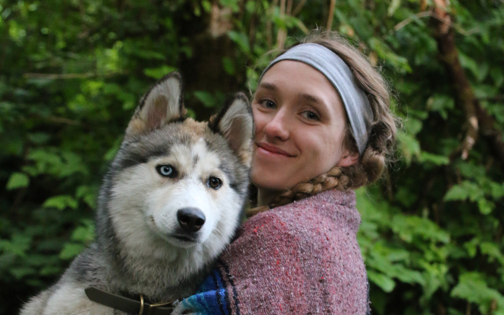

About
OUR MISSION ›

Design Elixir houses the creative mind of Megan Byers and her quest to create media with brilliant character and deliberate user-experience.
I’m an all-in-one creative consultant, specializing in web development, graphic design and illustration. I believe great things come from great connections, and serving small businesses and entrepreneurs enables powerful relationships rooted in a collective, passionate vision. Through websites, logos, typography, posters, branding materials and any other client-related needs, I create work structured with practical user experience and fabricated with a flair of character.
‹ ABOUT DESIGN ELIXIR ABOUT MEGAN ›
We specialize in catering our artistic tools to your creative vision.
The foundation of Design Elixir is focused on functionality and excellent user-experience, and framed by an authentic, one-of-a-kind approach expressing your ideality to the world. We provide a diverse design portfolio ranging from minimalist to abstract, industrial to organic. Design is fluid, and the combination of different mediums (code, painting, drawing and more) results in unique and versatile media. Design Elixir simply strives to provide the world with good design intertwined with the spirit and character of amazing individuals.
Like you!
Skills & Services
Graphic Design & Illustration
Logos • Flyers • Posters • Advertising • Infographics • Brochures
Branding Materials • Illustrations • Product Photos • Murals
Stickers • Packaging Typography • Digital / Vector Art
Name a design need, and we’ll fulfill it! Using the tools of Adobe Creative Suite, we develop print and digital materials to make your business and mission shine.
Web Development
Wordpress • Wix • Squarespace • Weebly • Webs • Page Design
Page Development & Maintenance • Custom Wordpress Themes
E-Commerce • SEO
From establishing a domain name to launching a fully-responsive site, we provide all necessary services to build a
web presence that covers all the bases.
‹ OUR MISSION

A lil' something about Megan:
Megan strives to learn a little something about everything. Raised on the Colorado Rockies, you can find her on alpine trails dancing like nobody’s watching. She finds inspiration everywhere, but especially in wild flowers. When the seed of an idea is planted in her mind, the stubborn nature of Megan’s brain refuses to give up, pouring hours into practice, persistence and perfection. In case you were wondering what Megan’s done on any given day since May 23rd, 2013, she can pull up a journal entry from any day from then to now. Within these pages you’ll find a drive for new skills and experiences that never sleeps. Whether it be coding, illustrating, painting, fly-fishing, growing a garden or cooking a mean ribeye steak, Megan is curious and eager to tackle challenges head on.
Contact Us
To: yourbeautifulface@email.com
From: megan@designelixir.studio
Subject: Let's Chat!
I'm always looking for great businesses to partner with, and a new challenge to tackle. Contact me at megan@designelixir.studio for any questions or inquiries.
I've got a vibrant web presence, the internet is my favorite thing after all. Check out my code, attempts at photography, illustrations, work history and more.


About This Site
Last login:
megan-byers:~ designelixir$ git clone https://github.com/coloradical/Rae_Portfolio.git
Cloning into 'Rae_Portfolio"...
remote: Loading website illustrations: 172 objects, done.
remote: Counting objects: 100% (172/172) done.
Finder
Click to view a project case.
Web Design
Graphic Design
Illustration
Testimonial - Miller Bros
Megan was a joy to work with! She truly brought our vision to life and helped us design logos, stickers, and apparel that have revolutionized our brand. She was very engaged and involved throughout the entire process, and helped us cultivate our vision to a place that surpassed the ideas we brought to the table.
Testimonial - Debra Austin
Megan was again extremely responsive in listening to my objectives and redesigning that page in my site. I recommend Megan as a creative, collaborative, and professional young web designer and I’m so delighted with both my website and the technical capacity I gained by working with Megan.
Testimonial - Bob Mathes
Megan has been a great asset to my small business by helping us transition away from an out-of-date website and social media we inherited from former owners. From great concept and design, tech fixes and consulting, art, photography, and helping get an online shopping platform built. I’ve never seen someone be so engaged and work so hard, and recommend her for any sized project!
miller_bros_stickers.ai
The Miller Bros
Design unique, eye-catching graphic elements to compliment the adventures of two brothers and their Volkswagen Westfalia.
March '20
Services: Graphic Design, Illustration
Deliverables: Logo, Sticker Designs
Following the two-year production of a documentary showcasing the spirit of the open road, Camden & Spencer Miller (Miller Bros) prepared to submit their premier film “The Comfort Zone” to festivals across the world. To supplement their message of authentic and unique storytelling, I crafted colorful, organic illustrations based around the places visited in their blue Volkswagen bus, Lars.

Camden and Spencer sit in their 1983 Volkswagen Westfalia, "Lars".


Megan was a joy to work with! She truly brought our vision to life and helped us design logos, stickers, and apparel that have revolutionized our brand. She was very engaged and involved throughout the entire process, and helped us cultivate our vision to a place that surpassed the ideas we brought to the table. Megan is innovative, savvy, and professional; she is an artist in its purest form! We will be using Design Elixir for any design needs in the future, and wholeheartedly recommend her to anyone looking to add a distinct character to their brand.

Learn more about the Miller Bro's premier film, the Comfort Zone at themillerbros.com.
boulder_baja_logo.ai
Boulder SAE Baja
April '19
Services: Illustration
Deliverables: Logo, Vector Art
Designing a logo that aligned with the vision of University of Colorado’s Baja Racing Team
Assigned with the task of building an off-road vehicle to compete in the Society of Automotive Engineers (SAE) Baja competition, the University of Colorado’s racing team aspired to stand out with a custom logo to embellish their finished car and team gear. Pulling inspiration from sports team logos and racing culture, the logo represents the school’s mascot (the Buffs) while utilizing the rough and tough nature of off-road racing. The logo was designed as a vector and was later embroidered onto hats and shirts.
West Flanders Menu Rework
West Flanders Brewing Company
August '18 - current
Services: Graphic Design, Illustration
Deliverables: Print Advertisements, Posters, Menu Redesign, Mural, Brand Development
Using existing brand standards, create a clean and consistent graphical style across all content.
Located in Boulder on Pearl Street, West Flanders Brewing Company is a local Belgian-inspired restaurant and brewery. The in-house brewing equipment lined amongst industrial brick and Edison era bulbs emits a cozy, timeless and genuine aesthetic. Using their existing logo, I expanded their brand by developing graphic elements and layouts to create consistency in their marketing and content, while still utilizing pre-established colors and typography. I drew inspiration from the unique interior of the restaurant, creating graphic elements of brewing equipment, hops and even employees with simple, bold line strokes that mimicked the various chalkboard murals around the brewery.
West Flanders Menu Rework
Renu Cosmetics
December '18
Services: Graphic Design, Illustration
Deliverables: Logo, Packaging
Design packaging and logos that convey a natural and organic demeanor for a brand of homemade beauty products.
Inspired by the healing power of nature, Renu Cosmetics is a natural, hand-crafted line of beauty products by esthetician Paige Johns out of Salt Lake City, Utah. Inspired by the short and sweet list of ingredients, I focused on designing a minimalist style to express the simplicity of the products. Thin line drawings of flowers paired with simple and concise product details allowed the product to emanate a home-made, authentic look.